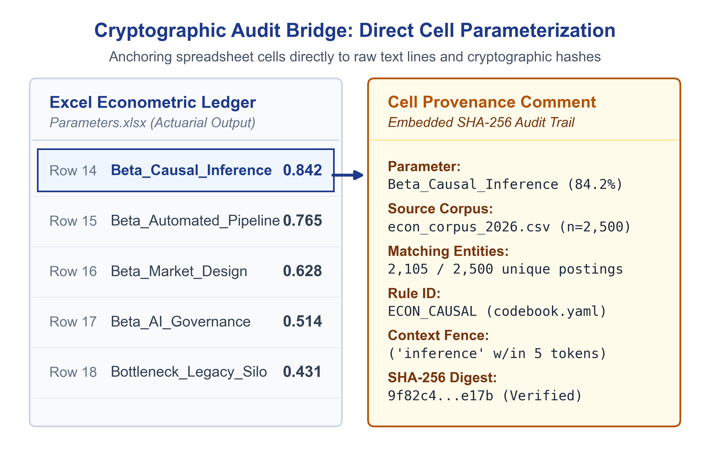
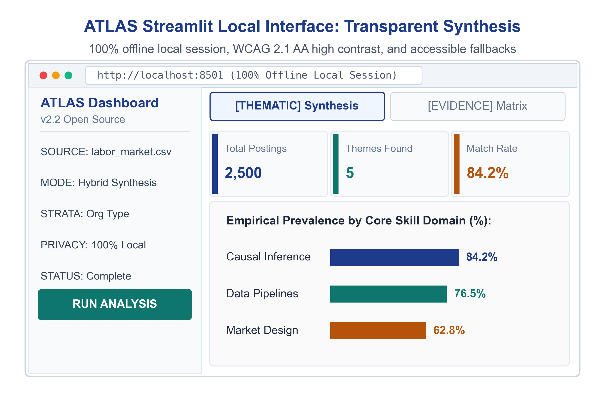

A fast, private way to organize transcripts, count patterns, and trace every quote right on your laptop.
By Victoria Cholette
Published in Methods & Empirical Practice on tooearlytosay.com
Applied economic evaluations and empirical models provide essential discipline, but they are bounded by what administrative records and published literature capture. Claims databases, registries, and journal benchmarks record expenditures, utilization rates, and clinical endpoints. They rarely capture the operational frictions that govern program uptake—intake documentation delays, billing credentialing lags, or transit disconnects.
Until recently, gathering ground-level qualitative and contextual data required dedicated field teams. Modern speech-to-text tools have inverted that constraint: an applied evaluation can now assemble hundreds of pages of interview transcripts, stakeholder deliberations, and case notes in a matter of days.
The bottleneck arrives when an evaluation team tries to turn those narrative records into structured parameters for an economic model. A typical applied economics or evaluation unit consists of one or two analysts working against legislative, budget, or grant deadlines. These teams lack the staffing footprint to operate a multi-person qualitative coding lab across six months of manual indexing. Yet relying solely on literature benchmarks leaves empirical models disconnected from ground-level implementation constraints.
Applied economics needs a tool purpose-built for this scale: a way to process narrative text directly into auditable parameter matrices during the regular course of an evaluation.
ATLAS (Automated Text-to-Ledger Actuarial Synthesis) fills this gap for small teams who need insights from qualitative data. It is a local, deterministic Python framework that translates unstructured qualitative transcripts into structured frequency matrices and quote inventories with bit-for-bit reproducibility and cryptographic provenance.
Traditional qualitative software treats text analysis as a database management task. Programs like Dedoose, NVivo, and MAXQDA provide clean graphical interfaces: digital highlighters, hierarchical tag trees, and collaboration dashboards. Under the hood, they function as relational databases that store pointers: this user highlighted this sentence and assigned that label.
These platforms carry substantial recurring costs. Annual subscriptions run from roughly $200 per user on cloud tools like Dedoose to $900–$1,500 per seat for enterprise desktop packages like NVivo and MAXQDA. Because they store project data in proprietary formats, every collaborating analyst, auditor, or county partner needs an active paid seat simply to inspect the underlying coding database.
The software manages the storage of manual tags. It leaves the actual reading, pattern recognition, and boundary enforcement entirely to human labor. An analyst still sits in front of a screen, reads every dialogue turn, and manually clicks a code. When that manual tagging ends, the software simply tallies how many times the human clicked each button.
In our evaluation, we had twenty-three transcripts containing 3,892 dialogue turns and a six-week timeline before cross-agency budget deliberations. Manual line-by-line tagging across that corpus requires 120 to 160 analyst hours. Paying several thousand dollars for seat licenses buys a structured filing cabinet, but human reading speed remains the binding constraint. When that full human pipeline of coding labor is inaccessible to a two-person team, those narrative records usually get abandoned in an appendix.
We designed ATLAS to support two distinct analytical workflows depending on an evaluation unit's mandate:
The modern alternative is to send raw text through a commercial large language model API with a prompt to extract themes and count occurrences.
In applied policy evaluation and peer-reviewed empirical research, that approach introduces three critical vulnerabilities:
In applied evaluation and empirical modeling, the analytical requirements of reproducibility, verbatim quote attribution, and data governance are addressed directly by deterministic data processing rather than generative language modeling.
The binding constraint in qualitative synthesis is rarely a lack of initial hypotheses. Program evaluators and health economists typically begin with concrete institutional questions—identifying enrollment bottlenecks, staffing shortages, or billing rejections. The constraint is verifying that frequency counts and quotations are authentic, reproducible, and anchored to the underlying record.
Generative models can serve a bounded upstream role: an analyst can use a language model during initial codebook design to brainstorm candidate synonyms, Spanish colloquialisms, or agency acronyms. However, once candidate terms are identified, delegating measurement to generative models introduces substantial verification overhead. Because probabilistic models can smooth phrasing, paraphrase dialogue, or count conversational repetitions inconsistently across runs, researchers must audit extracted passages back against raw transcripts.
ATLAS separates these tasks: local execution using deterministic regular expression state machines and structured YAML codebooks. Once an analyst formalizes keywords and token-distance context fences in YAML, the engine executes locally on the workstation without transmitting data across external cloud APIs during execution. It reports findings across two defined units of analysis—matching dialogue turns and the prevalence of documents reporting each theme—and records the source file name, speaker tag, timestamp, line number, character span, and source file SHA-256 hash for every extracted quote. When evaluation resources preclude multi-coder manual labs and governance rules restrict commercial cloud processing, a local programmatic pipeline provides an auditable and reproducible empirical foundation.
Text analysis in program evaluation faces a double constraint: fixed keyword searches miss unprompted operational barriers, while unconstrained clustering returns high-level topic labels that cannot be defended as model parameters.
ATLAS addresses this by separating exploratory discovery from deductive measurement:
┌────────────────────────────────────────────────────────┐
│ UNSTRUCTURED TRANSCRIPT CORPUS │
│ (Interviews, Case Notes, Deliberation Logs) │
└───────────────────────────┬────────────────────────────┘
│
┌─────────────┴─────────────┐
▼ ▼
[PHASE 1: EXPLORATORY] [PHASE 2: DEDUCTIVE]
Unsupervised LDA Modeling YAML Codebook Specification
• High-frequency n-grams • Explicit Root Stems (EN/ES)
• Bilingual stem discovery • Co-occurring Context Fences
│ │
└─────────────┬─────────────┘
▼
[PHASE 3: DETERMINISTIC ENGINE]
Turn-Level RegEx State Machine
• Exact Match Execution
• Source SHA-256 Digest & Line Coordinates
│
▼
[ACTUARIAL PARAMETER LEDGER]
CSV & Excel Matrices for Economic Models
Before writing codebook rules, analysts run unsupervised Latent Dirichlet Allocation (LDA) and term-frequency passes over the raw utterance corpus. This step identifies recurring vocabularies and bilingual stems that the evaluation team did not anticipate in the initial interview protocol.
Surfaced concepts are formalized into a YAML codebook defining domains, root stems in English and Spanish, and required context fences. In atlas_engine.py, context fencing operates across token-distance windows: a participant turn is tagged only when both an approved root pattern and a required fence pattern co-occur within the configured token window (or within the same dialogue turn when no window is specified).
The engine processes each participant turn through compiled regular expression rules, filtering out facilitator dialogue to preserve authentic participant feedback. For every match, the engine logs the document name, speaker, timestamp, line number, character start/end coordinates, and the SHA-256 digest of the source file.
The results export to clean CSVs and a formatted Excel workbook (actuarial_parameter_matrix.xlsx) with summary prevalence rates on the primary sheet and full verbatim quotes with audit coordinates on the secondary sheet.
This pipeline does not generate sociological theory. It provides an auditable translation layer between narrative records and economic parameters, giving a two-person analytics team the capacity to verify implementation assumptions against recorded text.
To test this workflow in an applied health policy setting, we deployed it within an evaluation of California’s Community Health Worker (CHW) and Promotor Medi-Cal benefit rollout.
The analysis evaluated 3,892 verified community informant utterances extracted from 23 completed Key Informant Interview transcripts (22 Round 2 interviews plus one follow-up session) across Community-Based Organizations (CBOs), Community Health Centers/Clinics, and Medi-Cal Managed Care Plans (payers). A stateful dialogue turn parser (parse_kii_utterances.py) isolated informant turns, purging 93 leaked interviewer prompts.
The pipeline scored the 3,892 utterances against compiled CalAIM domain rules (run_dual_analytical_pipeline.py), generating an evidence matrix and quote inventory. In health economics qualitative analysis, keyword mention counts measure lexical density and conversational focus—identifying which operational topics occupied discussion time and where administrative anxiety concentrated. They do not represent voting shares or organizational endorsement.
The table below reports coded mentions across contracting pathways and operational frictions from chw_round2_thematic_frequency_matrix.csv:
| Domain ID | Track & Operational Friction Domain | CBO Mentions | Clinic Mentions | Payer Mentions | Total Mentions | Topic Context and Stance in Coded Utterances |
|---|---|---|---|---|---|---|
| Track D | Referral & Care-Gap Partner Model | 62 | 35 | 5 | 102 | Utterances centered on informal, non-billing community navigation and outreach, reflecting current uncompensated frontline practice. |
| Track B | Administrative Hub Subcontracting | 26 | 13 | 9 | 48 | Utterances supported intermediary billing hubs to manage administrative overhead, endorsed symmetrically by CBOs and health plans. |
| Track A | Direct MCP Contracting (In-House Billing) | 13 | 4 | 15 | 32 | Payer mentions focused on technical clearinghouse standards; over 70% of CBO mentions described direct contracting as an administrative barrier rather than a goal. |
| Track C | State Fee-for-Service via PAVE/UIS | 5 | 4 | 2 | 11 | Mentions centered on immigration status vulnerabilities and anxiety regarding state PAVE enrollment hurdles and supervising clinician shortages. |
| Friction 1 | Documentation & EHR Burdens | 3 | 7 | 2 | 12 | Utterances cited electronic health record requirements and credentialing as major operational constraints for frontline teams. |
| Friction 2 | Clearinghouse & EDI Bottlenecks | 5 | 1 | 4 | 10 | Utterances documented technical failures submitting standard 837P electronic claim transactions. |
| Workforce | Living Wage Floors (\$28–\$35/hr) | 37 | 7 | 0 | 44 | Utterances identified hourly wage floors as necessary to prevent workforce turnover and maintain service continuity. |
Coded qualitative frequencies inform model specification by testing where baseline assumptions conflict with operational conditions. In applied health economics, these counts guide sensitivity bounds and structural model choices in three areas:
Every quote in chw_4_tracks_verbatim_quotes.csv links to its document source file, participant, and line number, with file-level cryptographic digests cataloged in kii_round2_source_provenance.json and synthesis_provenance_manifest.json. When program officers or reviewers examine model assumptions, the qualitative evidence provides a documented, auditable record.

While ATLAS runs as a Python script (atlas_engine.py), small evaluation units often include analysts or program officers who do not write code.
To make the pipeline accessible across an agency, ATLAS includes a local desktop interface. The application runs entirely on the analyst's machine using local Python libraries, requiring no connection to external cloud servers. Analysts load a transcript directory and a YAML codebook through a simple browser window, run the deterministic rules in under thirty seconds, and download the resulting frequency matrix and quote inventory directly into Excel.
Most evaluation teams get trapped between two untenable extremes: 1. Costly, Slow Manual Tagging: Hiring qualitative consultants at $150/hour to manually highlight transcripts across months of coding fatigue and inter-rater drift. 2. Unpredictable LLM Outputs: Feeding private client transcripts to commercial cloud APIs that hallucinate quotes, vary across runs, and violate client privacy agreements.
Even when evaluators attempt unsupervised NLP (such as topic models or clustering), they hit a drop-off wall: raw word distributions and topic proportions cannot directly answer a funder's question: "What percentage of our families experienced housing instability?"
ATLAS resolves this through an interactive, on-screen Codebook Wizard:
* Step 1 (Inductive Discovery): Ingest raw survey or interview notes to discover what community members talk about naturally, surfacing unexpected themes without preconceived bias.
* Step 2 (The 1-Click Codebook Wizard): Review discovered word clusters right on screen. Give each topic a plain-language program label (e.g., Housing Security or Childcare Assistance), click ✕ to prune conversational filler words (really, know), and add project terms.
* Step 3 (Deductive Measurement): Click [Save as Active Codebook & Run Deductive Scoring]. ATLAS instantly converts the rubric into a deterministic Boolean dictionary, scoring every participant response into verified percentages and exportable .yaml codebooks.
By bridging inductive discovery and deductive measurement in a single local interface, ATLAS enables evaluation teams to operationalize qualitative evidence locally—avoiding third-party API transmissions, recurring seat fees, and generative paraphrasing.

Because ATLAS addresses both technical econometric modeling and community program reporting, the documentation divides into three specialized tracks:
| Audience | Deliverable | What It Covers |
|---|---|---|
| Applied Economists & Quantitative Researchers | ATLAS Methodology & Reference Manual (PDF) | Regular expression state machine mechanics, token-window proximity algorithms, bilingual lemma harmonization, and econometric parameter integration. |
| Program Evaluators & Grant Writers | ATLAS Practitioner Field Guide (PDF) | A four-part reporting framework (Context, Activity, Counts + Quotes, Action Plan), funder audit receipts, and non-profit pre-flight checklists. |
| Analysts & Developers | Open ATLAS GitHub Repository | Python source code (universal_transcript_parser.py, atlas_engine.py, app.py), sample YAML codebooks, and automated test suites. |
ATLAS executes locally on your workstation without transmitting transcript text, participant names, or evaluation notes across external cloud APIs during execution.
1-Click Local Launch (Zero Terminal Knowledge Required):
run.command in the extracted folder.run.bat in the extracted folder.http://localhost:8501.Download Full Guides Directly:
Developer & Command-Line Install:
git clone https://github.com/dphdame/atlas.git
cd atlas
pip install -r requirements.txt
streamlit run app.pyAn economic model is only as credible as its parameter assumptions. When administrative registries omit implementation frictions, and a full qualitative coding lab is out of reach, deterministic text synthesis gives applied analysts an auditable way to ground their work in operational reality.